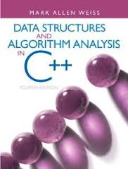
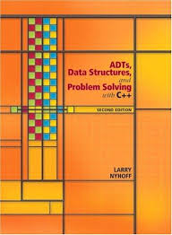

Course Details
-
The course consists of, per week,
- 4 hours of lectures
- 2 hours of lab exercises
Textbooks and Reference Books
-
Recommended textbooks

- Paul Deitel, Deitel & Associates (2017). C++ How to Program.
There are only few copies available in the campus bookstore. On the other hand, you may purchase an e-version of book from the campus bookstore for HK$316. We were told that it may take around 3 days to get the code for an ebook.
 - M.A. Weiss (2014). Data Structures and Algorithm Analysis in C++.
The book is out of print. You may be able to find some free PDF copy on the Web.

- Data Structures and Algorithm Analysis Ed. 3.2 (C++ Version).
The above links to a free online version of the book from the author, Clifford A. Shaffer of Virginia Tech, USA.
- Paul Deitel, Deitel & Associates (2017). C++ How to Program.
-
Supplementary textbooks

 
Topics Covered
- Introduction to computer programming
- Fundamentals of C++: data types, variables, operators
- Flow controls
- Arrays
- Functions, scope, and recursion
- File I/O
- Pointers
- lvalue references
- Structures
- Class, object construction, iniitalization, and destruction
- Inheritance and polymorphism
- Generic programming
- Standard Template Library (STL)
- Static data members and member functions
- Some features in C++11
- rvalue references and move semantics
- Linked lists
- Stack and queue
- Binary search tree
- Hashing
Intended Learning Outcomes
On successful completion of this course, students are expected to be able to:- Use common software tools to develop and debug a program written in an OOP language.
- Demonstrate that recursive and non-recursive functions are abstractions of sub-problems in a task.
- Describe the concept and the use of pointers in indirect addressing and dynamic memory allocation.
- Write object-oriented programs in C++ with object creation, destruction, member variables and functions, inheritance, polymorphisms, and templates.
- Analyze a program and provide simple solutions with OOP.
- Write basic algorithms associated with data structures such as stacks, queues, lists, trees, and hashes.
- Define binary tree and search tree and describe how they are used to solve problems.
- Develop a large program using separate compilation, good OOP design, and code reuse.
Prerequisites & Exclusions
Pre-requisite: Grade A or above in COMP 1002 (prior to 2013-14) / COMP 1021 / COMP 1022P / COMP 1022Q / ISOM 3230. Exclusion: COMP 1004 (prior to 2013-14), COMP 2011, COMP 2012.